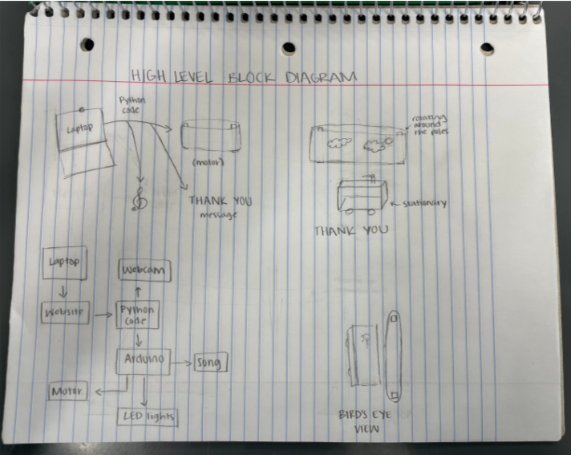

Once you've donated, complete this form to be sent your personalized thank you video!
The goal of our project was to create a contraption that provides donors with entertainment as a way to show our appreciation for their donation. As we began this project, our group had nothing in mind other than the task we needed to accomplish: creating a sort of machine which would be activated by a donation sent through a website. During the brainstorming process, we were unsure of what we wanted our final product to look like, but knew we wanted our machine to possess a light show and music. After the discussion of some big ideas and troubleshooting, we reached our decision on what shape the machine would take. Overall, our inspiration for the project came from trying to make a person’s donation worthwhile by creating something which thanked them for the resources they gave.
Meet the team.
The Food Bank of Central & Eastern North Carolina is a nonprofit organization that has provided food for our friends and neighbors facing hunger in 34 counties in central and eastern North Carolina for 40 years. The Food Bank works across the food system to provide access to nutritious food that nourishes families, children, seniors, and individuals. Through partnerships, education, and programs, the Food Bank empowers communities to overcome hunger, creating an environment where all North Carolinians thrive.
For our donation contraption, we created a stationary train out of small containers. Directly behind the train, two motors will rotate a drawn-out backdrop. Flashing LED lights that spell out "THANK YOU" and a selected song playing through a small speaker will accompany the train.
